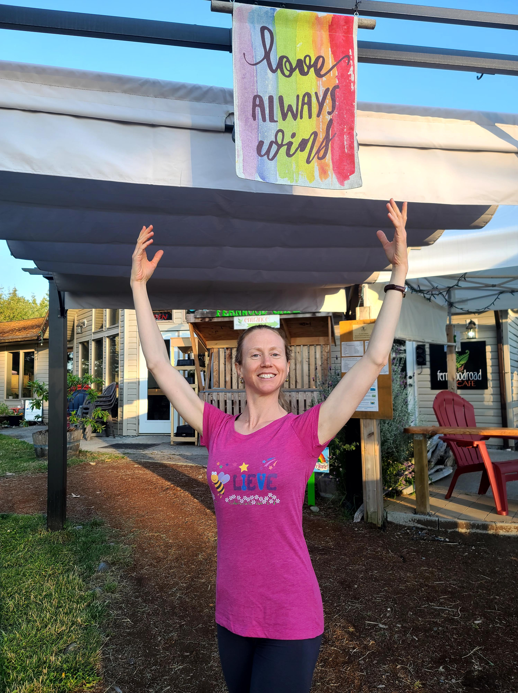

Get our updates
Sign up for our email list to get notifications of new classes. Email cedarpointdance(at)gmail.com and say "add me to your email list".
How to Register
Register by emailing cedarpointdance(at)gmail.com and sending an e-transfer to the same email. Registration is not
complete until payment is received. If possible, please register at least 2 days prior to each class. Class size is limited to 8.
If the class is full, we’ll let you know, and your e-transfer payment will not be accepted.
Cancellations: Full refund if you need to cancel due to illness, otherwise, cancellation requires 3 days notice for a refund.
July/August Classes
Ballet Level 1 - teen & adult
- Time: Wednesdays, 5 – 6pm, July 6 – Aug 31
- Location: All Saints by-the-Sea upper hall (110 Park Drive)
-
Cost: $10/class
- Instructor: Kathryn Luttin
-
Class description: This class is for absolute beginners through to those with a couple years of beginner
ballet training (ages 13 to adult). We’ll practice the basic movement patterns upon which ballet is built and learn some
simple combinations to get you moving. This class is intended to be inclusive of a diverse range of
abilities and ages. You’ll be encouraged to do what works for your body at this time. Wear comfortable
clothes that don’t restrict your movement. Ballet slippers are best, but socks work.
Ballet Level 2 - teen & adult
- Time: Wednesdays, 6:15 – 7:45pm, July 6 – Aug 31
- Location: All Saints by-the-Sea upper hall (110 Park Drive)
-
Cost: $15/class
- Instructor: Kathryn Luttin
-
Class description: This class is for those with several years of ballet training who are familiar with
common ballet moves (ages 13 to adult). There will be options for making the combinations more or less advanced, so don’t
worry if you are out of practice. If you are not sure if this is the right level for you, send us an
email and we can chat.
About Kathryn Luttin

Kathryn Luttin is a professionally-trained ballet dancer. She danced with the National Ballet of Canada as an apprentice,
but left professional dance at the age of 20 due to injuries. She later gained a Master’s degree in Physical Therapy. For the past 2 years,
she has taught after-school ballet for the GISPA dance program at the Gulf Islands Secondary School. She also taught ballet at the Rainwood
Dance Studio from 2018 - 2021.
Calendar